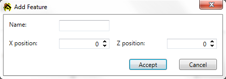

Schemas

A schema is a variation of the map based on difficulty or if the map is used for skirmishes/multiplayer. You can create up to four schemas; one for each difficulty and one for multiplayer maps. Having schemas allows you to change player starting conditions, map weapons, and starting objects between each schema type. For example, on the easy schema you can start the player off with 4000 of each resource and have map weapon turned off. Then for the hard schema the player starts off with 1000 of each resource, and the map now features earthquakes.
To create a new schema, first select an EMPTY schema and then click the "Add" button. You will now be able to modify the schema fields, as well as add new units, features, and specials. To remove a schema, simply select the schema you wish to remove by selecting it in the drop down box, and then click the "Remove" button. A prompt will ask if you are sure you wish to proceed, clicking the second "Remove" button will confirm your decision.
General
There are eight general schema fields: type, AI profile, surface metal, moho metal, human metal, human energy, computer metal, and computer energy.
Type
This is a simple drop down box where you can select what type of schema this is. A Network 1 schema will be chosen for skirmish
and multiplayer games. An Easy, Medium, or Hard schema will be chosen if the respective campaign diffuculty is chosen.
AI Profile
Here you can choose what AI profile the AI will run with. Or you can type in your own custom profile name. The name must be the
same as the filename containing the profile (minus extension).
Surface & Moho Metal
These two fields determine how much metal the basic and moho metal extractors will produce. These function just
like the tidal and solar strength fields in settings, where a value of 4 will mean that 4 metal will be produced.
Human Metal & Human Energy
These determine the starting amount of metal and energy for the player. These will be ignored by the values
set in the skirmish menu, so they are only really used for campaigns.
Computer Metal & Computer Energy
These are exactly the same as the human metal and energy fields, except they're for computer players.
Weapon
To add a map weapon simply check the "Use weapon" check box. Weapons have five fields: weapon, radius, duration, density, and interval.
Weapon
This is where you can select the type of weapon of wish the map to have. There are three options: earthquake, meteor, and hailstorm.
Radius
As the name suggests, this determines how large of an area is impacted by the weapon when it triggers.
Duration
Determines for how long the weapon will last.
Density
The spread of the weapon's "projectiles".
Interval
How often the weapon will occur.
Units, Features, and Specials
The large, tabbed area taking up the bulk of the section is dedicated to the units, features, and specials (start positions) added to map by the schema. You can start players off with extra units, add extra map features (e.g. metal deposits), and add or modify player start positions.
Adding a new object is easy. Simply click the "Add..." button, and a dialog will appear. Features and specials only need the object's name and its location on the map. For units you'll need much more.
Units
Name
The internal name for the unit. For example, ARMCOM for the Arm Commander.
X, Y, Z positions
The (X, Y, Z) start coordinate for the unit. The Y position is for setting the unit in the air.
Ident
The unique identifier for the unit.
Player
To which player does the unit belong to?
Health percentage
How much of its health does the unit start off with? Setting this to 100 will mean the unit starts off with a full bar of
health.
Angle
Which way is the unit facing at the start of the game?
Kills
How many kills has the unit already achieved? This is useful for setting veterency.
Initial mission
Here is where things get interesting. Initial mission is simply a list of commands that the unit will follow until it reaches
the end; at which point control is released back to either the human player or the AI. For a list of commands, see here.
Features and Specials

Name
The internal name for the feature or special.
X, Z positions
The starting coordiantes for the object.